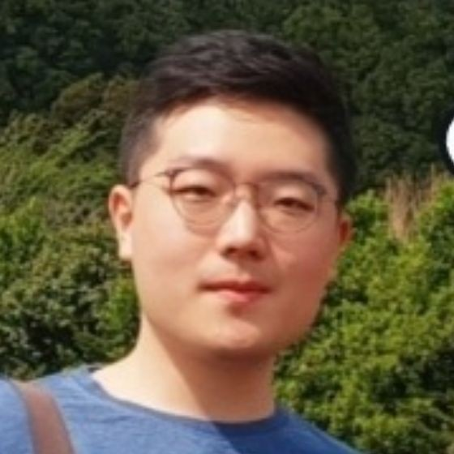

Taehyun ChoI received my Ph.D. in Electrical and Computer Engineering from the Cognitive Machine Learning Laboratory at Seoul National University, advised by Jungwoo Lee, and I am currently a Postdoctoral Researcher. My research focuses on reinforcement learning, human-aligned sequential decision-making, and uncertainty-aware learning. I received my B.S. in Mathematics from Korea University. E-mail: talium@cml.snu.ac.kr GitHub / Google Scholar / LinkedIn / CV |
 |
Personal InterestStrategic Games: Behavioral Economics and Cognitive Science: Philosophy: |
Research InterestMy academic research focuses on sequential decision-making under uncertainty, particularly in the context of human feedback. I have extensively studied distributional reinforcement learning (distRL), reinforcement learning from human feedback (RLHF), and regret analysis, aiming to bridge theory and practice. Drawing inspiration from how humans make decisions, I aim to develop mathematical models and optimize for human-in-the-loop systems, uncovering both theoretical insights and practical algorithms for robust decision-making. Currently, I’m interested in reasoning LLM agents and regret-based decision theory. I’m actively looking for research scientist or postdoctoral opportunities in theoretical foundations of reinforcement learning or reasoning LLM research. |
Recent News |
| Feb 2026 - I was selected for the Sejong Science Fellowship for the project "Distributional Regret Analysis for Human-Aligned Interactive Agentic AI under High Uncertainty." |
| Feb 2026 - I received my Ph.D. in Electrical and Computer Engineering at Seoul National University and was honored with the Distinguished Dissertation Award. |
Dissertation |

|
A Distributional Perspective on Human-Aligned Decision Making under UncertaintyTaehyun Cho Department of Electrical and Computer Engineering, Seoul National University Distinguished Dissertation Award paper / |
Preprints |

|
A Regret Minimization Framework on Preference Learning in Large Language ModelsSuhwan Kim*, Taehyun Cho*, Youngsoo Jang, Geonhyeong Kim, Yujin Kim, Moontae Lee, Jungwoo Lee Submitted to ICML 2026 |

|
An Axiomatization of Process Score Model: Your Process-level Feedback is Not a RewardTaehyun Cho, Suhwan Kim, Seungyub Han, Seokhun Ju, Dohyeong Kim, Kyungjae Lee, Jungwoo Lee Work In Progress |

|
Off-policy Direct Preference Optimization with Monotonic Improvement GuaranteeSeungyub Han*, Taehyun Cho*, Seokhun Ju, Dohyeong Kim, Kyungjae Lee, Jungwoo Lee Work In Progress |
International Conference |

|
Policy-labeled Preference Learning: Is Preference Enough for RLHF?Taehyun Cho*, Seokhun Ju*, Seungyub Han, Dohyeong Kim, Kyungjae Lee, Jungwoo Lee ICML 2025 Spotlight (Top 2.6%) paper / arxiv / |

|
Bellman Unbiasedness: Toward Provably Efficient Distributional Reinforcement Learning with General Value Function ApproximationTaehyun Cho, Seungyub Han, Kyungjae Lee, Seokhun Ju, Dohyeong Kim, Jungwoo Lee ICML 2025 paper / arxiv / |

|
Spectral-Risk Safe Reinforcement Learning with Convergence GuaranteesDohyeong Kim, Taehyun Cho, Seungyub Han, Hojun Chung, Kyungjae Lee, Songhwai Oh NeurIPS 2024 paper / arxiv / |

|
Pitfall of Optimism: Distributional Reinforcement Learning by Randomizing Risk CriterionTaehyun Cho, Seungyub Han, Heesoo Lee, Kyungjae Lee, Jungwoo Lee NeurIPS 2023 paper / arxiv / |

|
SPQR: Controlling Q-ensemble Independence with Spiked Random Model for Reinforcement LearningDohyeok Lee, Seungyub Han, Taehyun Cho, Jungwoo Lee NeurIPS 2023 paper / arxiv / code / |

|
On the Convergence of Continual Learning with Adaptive MethodsSeungyub Han, Yeongmo Kim, Taehyun Cho, Jungwoo Lee UAI 2023 paper / arxiv / |

|
Adaptive Methods for Nonconvex Continual LearningSeungyub Han, Yeongmo Kim, Taehyun Cho, Jungwoo Lee NeurIPS 2022 Optimization for Machine Learning Workshop paper / |

|
Perturbed Quantile Regression for Distributional Reinforcement LearningTaehyun Cho, Seungyub Han, Heesoo Lee, Kyungjae Lee, Jungwoo Lee NeurIPS 2022 Deep RL Workshop paper / |

|
Chebyshev polynomial codes: Task entanglement-based coding for distributed matrix multiplicationSangwoo Hong, Heecheol Yang, Youngseok Yoon, Taehyun Cho, Jungwoo Lee ICML 2021 paper / arxiv / |
International Journal |

|
Optimized shallow neural networks for sum-rate maximization in energy harvesting downlink multiuser NOMA systemsHaesung Kim, Taehyun Cho, Jungwoo Lee, Wongae Shin, H Vincent Poor IEEE Journal on Selected Areas in Communications paper / arxiv / |

|
An Efficient Neural Network Architecture for Rate Maximization in Energy Harvesting Downlink ChannelsHaesung Kim, Taehyun Cho, Jungwoo Lee, Wonjae Shin, H Vincent Poor 2020 IEEE International Symposium on Information Theory (ISIT) paper / arxiv / |
Research Projects |

|
Sejong Science FellowshipDistributional Regret Analysis for Human-Aligned Interactive Agentic AI under High Uncertainty Funded by National Research Foundation of Korea ( 5-year program ) |
Education & Research Experience |

|
LG AI ResearchResearch Intern, Superintelligence Lab 2024.12 - 2025.05 |

|
Seoul National UniversityPh.D./M.S. in Electrical and Computer Engineering 2020.03 - 2026.02 |

|
Korea UniversityB.S. in Mathematics 2013.03 - 2020.02 |
Academic Services |
| Conference Reviewer: ICML, NeurIPS, ICLR, AAAI |
|
Design and source code from Jon Barron's website |